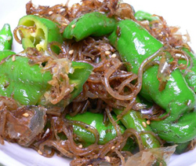

万願寺とうがらしの甘辛炒め
- 調理時間：30 分
- （一人当たり）
- カロリー：48kcal
- たんぱく質：1.8g
- 脂質：2.4g
- 塩分：0.8g


＜４人分＞
- 万願寺とうがらし
（ピーマンでもよい） - ２００ｇ
- 糸こんにゃく
- １／２袋
- 白ゴマ
- 小さじ２
- 醤油
- 小さじ２～３
- みりん
- 小さじ２
- 塩
- 少々
- ゴマ油
- 少々
- 削り節
- お好みで


- 糸こんにゃくは下ゆでして食べやすい長さに切る。
- 万願寺とうがらしを食べやすい大きさに切る。
- フライパンに油を加えて火にかけ、万願寺とうがらしを炒める。
- 糸こんにゃく、白ゴマを加えてさらに炒める。
- みりん、醤油、塩を加えて、水分がとぶまで炒める。
- 仕上げに削り節をくわえる。
万願寺とうがらしの甘辛炒め
万願寺とうがらしは、真鶴の万願寺地区で地元民用に作られていたので、この地区名をとって名付けられたと言われています。
ビタミンＡ、Ｃが豊富で、辛味成分のカプサイシンも多少含まれます。カプサイシンは毛細血管の血液循環をよくする働きがあり、発汗を促し結果的に体を冷やします。また、新陳代謝を活発にし体脂肪を燃焼させる働きがあり、肥満の予防や改善に効果があります。疲労回復、むくみの解消などの効能もありますので、夏から秋へ移り変わるこの時期に食べて体力を養いましょう。